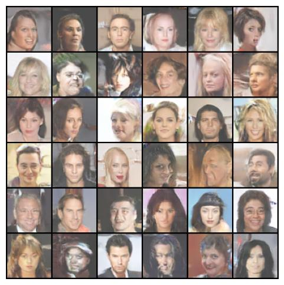
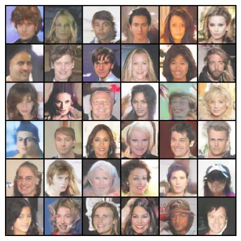

GAN (Generative Adversarial Networks) & VAE (Variational Autoencoders) 實作
本專案分別實作了 VAE 與 GAN 兩種經典的生成模型。目標是從 CelebA 資料集中學習，最後生成出像樣的人像照片。
VAE 的目標是最大化 Evidence Lower Bound (ELBO)。為了讓從 Latent Space 取樣的過程可以進行 Backpropagation，實作中使用了 Reparameterization Trick，將隨機性轉移到 eps，並結合 Reconstruction Loss (MSE) 與 KL Divergence 來計算總 Loss。
# Reparameterization 實作
z_mean, z_logvar = netEnc(data)
std = torch.exp(0.5 * z_logvar)
eps = torch.randn_like(std)
z = z_mean + eps * std # 讓梯度可回傳
# Loss 計算 (MSE + KL Divergence)
rec_loss = nn.MSELoss()(netDec(z), data)
kl_loss = -0.5 * torch.sum(1 + z_logvar - z_mean.pow(2) - z_logvar.exp())
loss = rec_loss + 0.0001 * kl_lossGAN 由 Generator (G) 與 Discriminator (D) 組成。為了避免訓練初期的 Gradient Vanishing 問題，我們採用了 Non-Saturating Loss 的實作方式：
分辨真假，因此對於 Fake Data 會給予 Label 0 (Zero) 進行 BCELoss 訓練，並且要切斷 G 的梯度。
# D 想把 Fake 判斷為 0
fake_inputs = netGen(z)
d_fake, _ = netDis(fake_inputs.detach())
d_label = torch.zeros(..., 1)
d_fake_loss = nn.BCELoss()(d_fake, d_label)為了提供 G 更好的梯度，我們不最小化被識破的機率，而是最大化騙過 D 的機率 (Label 設為 1)。
# G 想讓 D 把 Fake 判斷為 1
d_fake, _ = netDis(fake_inputs)
d_label = torch.ones(..., 1)
g_loss = nn.BCELoss()(d_fake, d_label)為了滿足 Lipschitz Continuity，防止 GAN 訓練過程中的 Mode Collapse 或是梯度爆炸，我們在 Discriminator 的卷積層加上了 spectral_norm。同時，Forward 回傳了 Logit 與 Prob 以兼顧數值穩定性與直觀觀測。
self.conv2 = nn.utils.spectral_norm(Conv2d(ch, ch*2, 5, stride=2))
# ...
d_logit = self.fc(x) # 用於 BCEWithLogitsLoss (較穩定)
d_prob = torch.sigmoid(d_logit) # 用於觀測預測機率 (0~1)在訓練 Discriminator 時，必須使用 fake_inputs.detach()。這可以確保 Backpropagation 只會更新 D 的權重，而不會錯誤地干擾到 Generator 的參數。
在 VAE 中，若 KL Divergence 過強會導致 Posterior Collapse (模型忽略 Latent Code)。因此加上一個較小的權重 (如 0.0001)，迫使模型優先學好影像重建。
VAE: 重建的影像較為平滑模糊，但 Latent Space 具有良好的連續性與插值特性。
GAN: 生成的影像細節較銳利、逼真，但在訓練過程中 Loss 的震盪較為劇烈，需要精細調參。
VAE Result
GAN Result
點擊下方按鈕查看完整的 PyTorch 程式碼實作。
View on GitHub